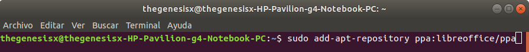
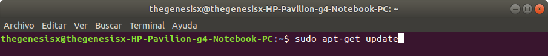
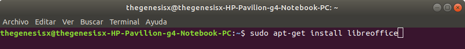
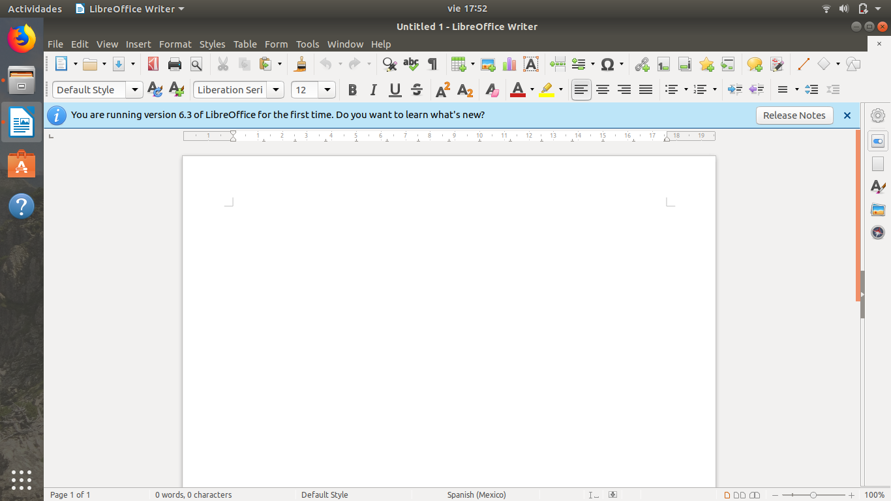
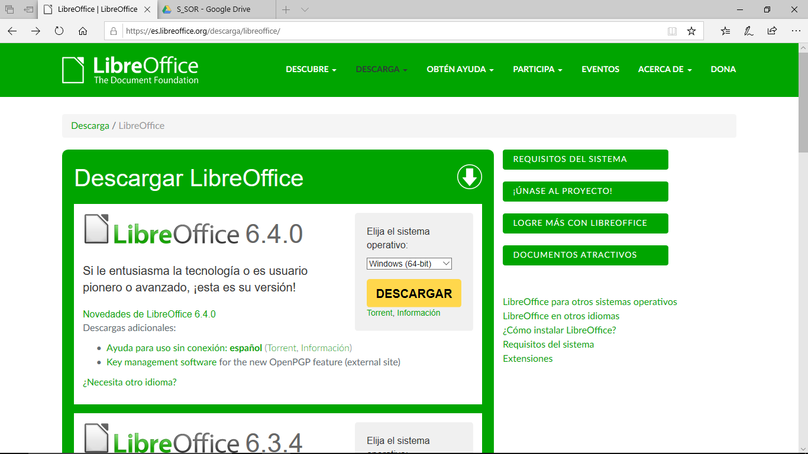
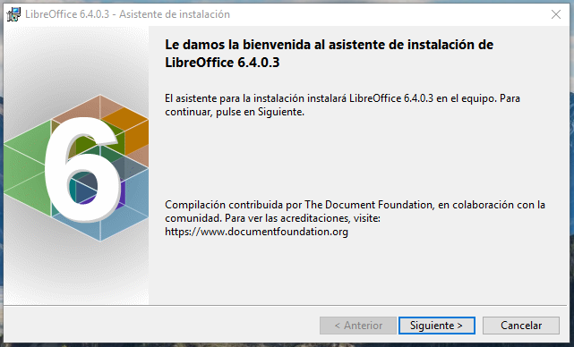
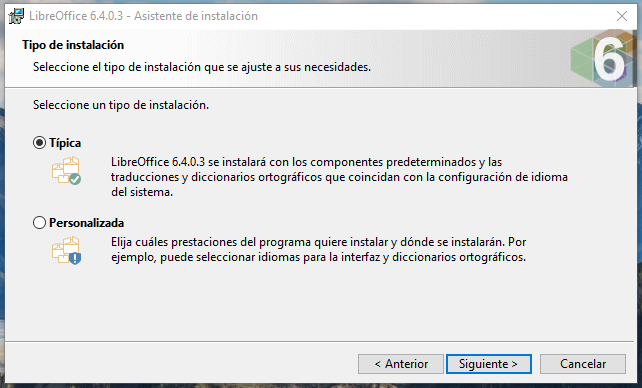
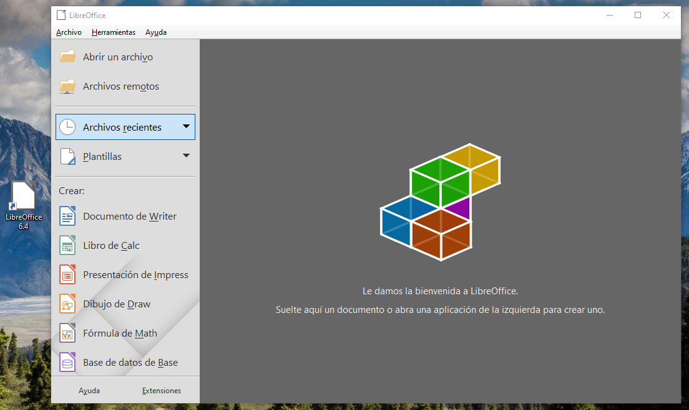
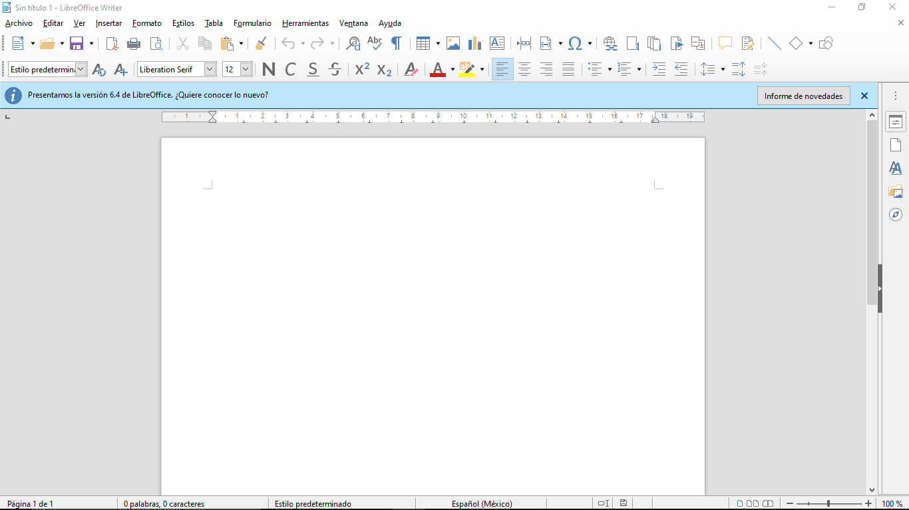

Instrucciones
- Instalar Libre Office en Windows y Linux.
Requerimientos
- Conexión a internet.
Comencemos
- Abrimos la consola de comandos mediante la combinación de teclas Ctrl+alt+T e instalaremos el repositorio que contiene Libre Office con el siguiente comando:
- Ahora procedemos a actualizar el repositorio de la siguiente manera:
- Para finalizar, instalaremos la paquetería de programas, así:
- Primero nos dirigiremos al siguiente link para poder descargar el programa de instalación.
- Una vez descargado el instalador, lo ejecutaremos e iniciaremos con la instalación de Libre Office.
- Por convención elegiremos la instalación típica, que pondrá los programas más comúnes a nuestra disposición,
como lo es el editor de texto, las hojas de cálculo, etc. De querer una configuración más específica, podemos dar
clic en la opción
Personalizada
y proceder de la manera que nosotros queramos. - Ahora dejaremos que el instalador haga sus procesos, y una vez finalizado, podremos cerrarlo y abrir el gestor de programas de Libre Office.
- Como podemos ver, ya tenemos a nuestra disposición la paquetería de Libre Office, en ambos sistemas operativos.
Comenzaremos instalando la paquetería de programas para Linux.



Con esto hemos terminado la instalación para Ubuntu.

Ahora nos encargaremos de la instalación en Windows.

Recuerda elegir correctamente la versión que corresponda con los bits de tu computadora.



